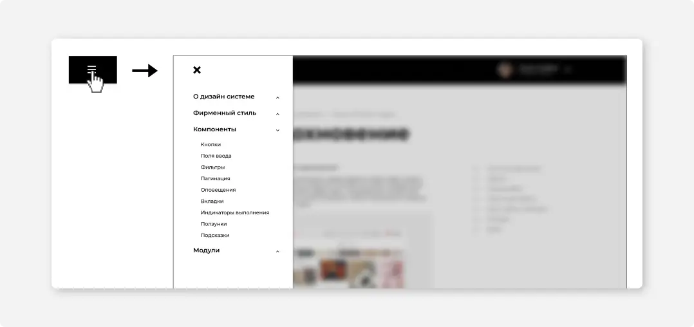
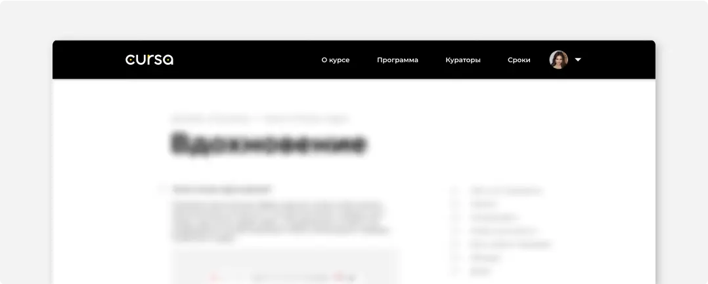
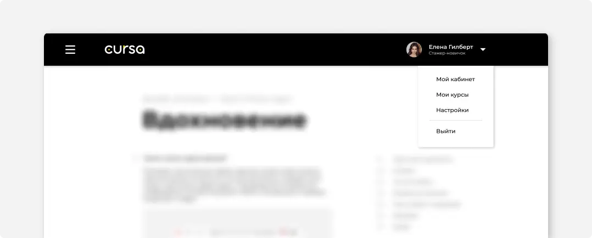
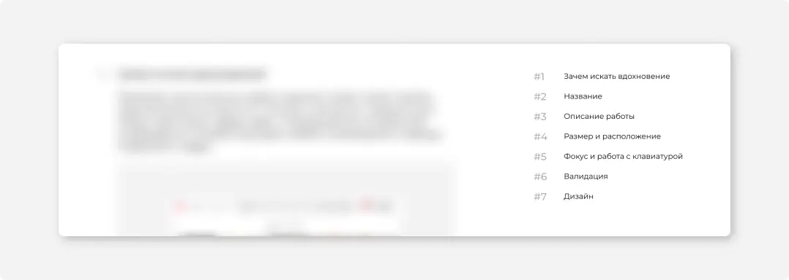

#1
Бургер-меню
Навигация по сайту, если страниц больше 1, осуществляется при помощи бургер меню. При нажатии на него появляется боковая панель поверх основного контента. Возможность взаимодействия с основным контентом блокируется и над ним появляется черная подложка с 20% прозрачностью, для того, чтобы привлечь внимание пользователя к появившемуся меню.
#2
Разделы
Если сайт состоит не более 3 разделов, можно воспользоваться шапкой для навигации.
Разделы могут иметь подразделы и отображаться при наведении в выпадающем меню. Если разделов, имеющих подразделы, больше двух, используйте бургер меню.
#3
Выпадающее меню
Выпадающее меню используется в случаях, когда необходимо оформить подразделы. Если подразделов больше 7, используйте для навигации бургер меню.
Так, всевозможные разделы, связанные непосредственно с аккаунтом пользователя раскрываются по нажатию на его аватар. Рекомендуем добавлять стрелочку рядом с фотографией пользователя для того чтобы подчеркнуть, что элемент интерактивный.
#4
Боковая навигация
Если страница состоит из нескольких разделов и необходимо сохранить возможность пользователя быстро передвигаться по ним, используйте боковую навигацию.Элементы боковой навигации являются по своей сути ссылками на заголовки страницы.
Располагайте боковое меню справа от текста. Рекомендуемое разделение ширины страницы в этом случае: 70% контент - 30% навигация.